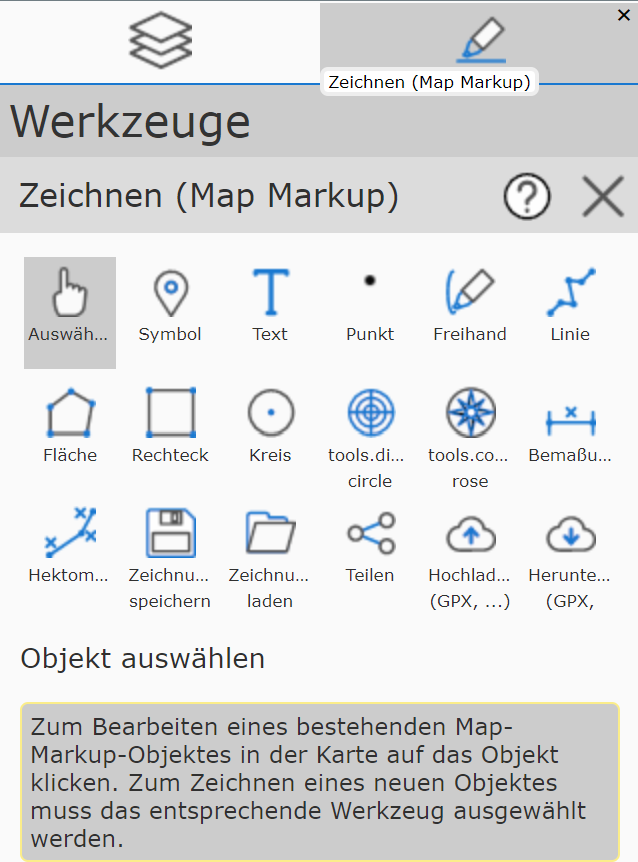
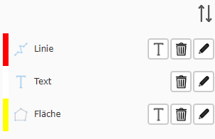
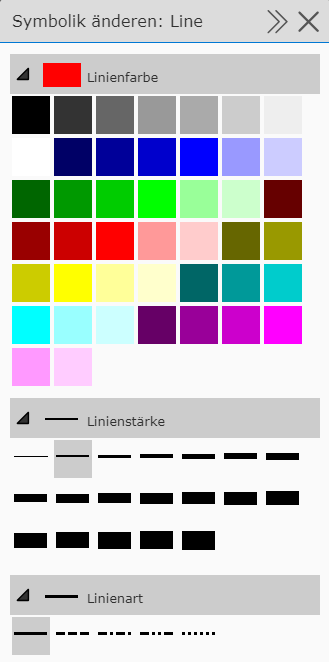

Bedienung Werkzeug Zeichnen (Map-Markup)¶
Allgemeine Bedienung¶
Das Zeichnen (Map-Markup) Werkzeug ist eigentlich eine Sammlung von (Sub-) Werkzeugen, die es ermöglichen, den Inhalt der Karte graphisch zu ergänzen. Nach dem Öffnen des Werkzeugs wird der Zeichnen- (Map-Markup) Dialog angezeigt. Darin werden alle Möglichen Zeichenwerkzeuge angeboten. Zusätzlich gibt es noch Buttons zum Verwalten von Zeichnungen (Laden, Speichern, Teilen, Upload, Download).

Die Buttons können je nach Endgerät variieren. In der Abbildung sind alle Werkzeuge zu sehen (Desktop). Unter den Buttons wird noch einmal der Name des gerade aktiven Zeichenwerkzeugs angezeigt, sowie gelb hinterlegt eine Beschreibung, wie dieses Werkzeug bedient wird (z.B. in die Karte klicken, auf bestehendes Zeichnungselement klicken, usw.).
Aufgrund dieser Beschreibung wird hier nicht auf die genaue Klickabfolge für die einzelnen Zeichenwerkzeuge eingegangen, sondern es werden die Möglichkeiten und Unterschiede der Werkzeuge aufgezeigt.
Neues Element zeichnen¶
Legt man ein neues Element an (beispielsweise eine Linie), müssen durch Klicken in die Karte mindestens zwei Stützpunkte definiert werden. Wir die Linie als gültig erkannt (mindesten zwei Stützpunkte), kann sie in die Karte übernommen werden. Bis zum Übernehmen wird immer noch die Entwurfsskizze (Sketch) mit den Stützpunkten angezeigt. Solange die Entwurfsskizze angezeigt wird, kann die Linie auch noch verändert werden:
Weitere Stützpunkte zeichnen
Stützpunkte mit der Maus verschieben
Arbeitsschritte über das Entwurfs-Kontextmenü (rechte Maustaste) rückgängig machen
über die Darstellungsoptionen die Darstellung ändern
Dass ein gezeichnetes Element gültig ist und in die Karte übernommen werden kann, ist über den Werkzeugdialog ersichtlich. Sobald bei einer Linie beispielsweise zwei Stützpunkte gesetzt wurden, erscheint im Werkzeugdialog folgender Button:

In die Karte übernommen wird das Zeichenelement mit dem Button mit Häkchen-Symbol. Nach dem Übernehmen kann gleich eine weitere Linie gezeichnet werden.
Bevor man ein Zeichenelement in die Karte übernimmt, kann optional noch eine Beschreibung angegeben werden.
Wenn die Linie beispielsweise einen Weg beschreibt, könnte man hier Wegbeschreibung nach ... eintragen.
Beschreibungen für Zeichenelemente sind optional, helfen allerdings das Element später wieder zuzuordnen und zu interpretieren.
Tipp: Es gibt noch weitere Möglichkeiten, um ein Zeichenelement in die Karte zu übernehmen und ein weiteres zu zeichnen:
Abschließen eines Entwurfes mit einem Doppelklick. Danach kann gleich mit dem Zeichnen eines Elementes gleichen Types fortgesetzt werden.
Ändern des Zeichenwerkzeugs: Zeichnet man eine Linie und möchte danach beispielsweise mit dem Zeichnen einer Fläche fortfahren, reicht es, auf das Fläche Werkzeug zu klicken. Eine gültige Linie wird dann automatich übernommen.
Beschriften eines Zeichenelements: Im oben gezeigten Übernehmen Dialog wird rechts neben dem Eingebefeld ein T (für Text) angezeigt. Damit wechselt man zum Text Werkzeug und kann das aktuelle Element beschriften (zB Länge einer Linie - siehe unten)
Bereits übernommene Zeichenelement werden zusätzlicht zur Karte auch als Liste ganz unten im Werkzeugdialog angezeigt:

Das Icon zeigt an, um welchen Typ es sich bei dem Element handelt (Linie, Fläche, Text, …). Zusätzlich gibt es noch einen Löschen Button (Mistkübel), einen Berarbeitungs-Button (Stift) und je nach Typ einen T Button (Text - Beschriften, siehe unten)
Symbolik ändern¶
Um die Symbolik des jeweiligen Objektes zu ändern, ist links von der Beschreibung ein Symbol (je nach Objekt ist dieses ein anderes Symbol).

Klickt man dieses an, gelangt man in das Menü, um Änderungen an der Symbolik zu treffen. Wählt man beispielsweise das Linien-Werkzeug aus, gibt es folgende Darstellungsoptionen:

Im Regelfall sind die Optionsmenüs für Farbe, Linienstärke und Linienart bereits aufgeklappt. Möchte man zum Beispiel die Farbe einer Linie ändern, so muss diese nur ausgewählt werden. Gleiches gilt für Linienstärke und Linienart (durchgezogen, strichliert, …).
Diese Optionen beziehen sich immer auf das gerade aktive Element. Ändert man eine Darstellungsoption, ändert sich die Darstellung sofort in der Karte.
Bemerkung
Zeichnet man ein neues Objekt, erkennt man die Änderungen erst, wenn man in die Karte klickt um Stützpunkte für das Element zu erstellen.
Unterschiedliches Verhalten von Elementtypen¶
Das oben beschriebene Verhalten ist nicht bei allen Elementtypen gleich. Hier ein paar Unterschiede/Besonderheiten:
Symbol: Symbole benötigen nur einen Stützpunkt. Nach dem Setzen des Punktes muss nicht zwingend auf den Übernehmen / Weiteres zeichnen Button geklickt werden, sondern es reicht hier, noch einmal in die Karte zu klicken, um ein weiteres Symbol zu zeichnen. Dadurch ist ein schnelles Zeichnen von mehreren Symbolen durch einfaches Klicken in die Karte (pro Klick wird ein Symbol in die Karte gesetzt) möglich.
Freihand: Mit diesem Werkzeug kann mit gedrückter Maustaste eine „freihand“ Linie gezeichnet werden. Wird die Maustaste losgelassen, wird diese sofort in die Karte übernommen. Dadurch können sehr schnell und komfortabel mehrere Freihandlinien gezeichnet werden.
Text: Um einen Text in der Karte zu setzen, ist nach dem Auswählen des Text Werkzeugs in die Karte zu klicken, um die Position des Textes festzulegen. Dadurch wird die Position des Textes gültig und es kann der eigentliche Text über das Textfeld und über Übernehmen / Weiteres zeichnen geändert werden. Eine Änderung sollte gleich in der Karte ersichtlich werden. Sollte die Position noch einmal geändert werden, kann diese mit einem weiteren Klick in die Karte (oder Ziehen des Einfügepunktes) erfolgen. Mit klick auf das Häkchen wird der Text endgültig in die Karte übernommen.
Bestehendes Element verändern¶
Es gibt zwei Möglichkeiten, um ein bereits gezeichnetes Element zu verändern.
Über das Zeichenwerkzeug Auswählen (Finger): Damit wird über einen Klick auf das Objekt in der Karte das Element markiert und kann verändert werden.
Über die Liste der bereits bestehenden Elemente: Durch Klicken auf ein Element in der Liste wird dieses für die Bearbeitung markiert. Mit dem Stift-Symbol kann das Objekt dann editiert werden.
Die zweite Methode ist praktisch, wenn mehrere Elemente übereinader liegen und ein geographisches Auswählen schwierig/unmöglich ist.
Tipp: Die Elemente in der Liste können leichter zugeordnet werden, wenn sie vor dem Übernehmen beschrieben wurden, da die Beschreibung in der Liste angezeigt wird.
Wurde ein Element zum Ändern markiert, wird für das Element in der Karte der Entwurfs-Sketch angezeigt. Außerdem erscheint ein neues Symbol Symbolik oberhalb der Auflistung, über das man in das Menü zum Bearbeiten der Darstellung kommt.

Durch den Entwurfs-Sketch lässt sich die Geometrie des Elements verändern. Ebenfalls kann die Darstellung über die Darstellungsoptionen angepasst werden. Zum Abschließen der Änderungen muss mit dem Häkchen-Button bestätigt werden, um diese zu übernehmen.
Bestehendes Element löschen¶
Zum Löschen eines Elements gibt es zwei Möglichkeiten:
Element über das Auswählen (Finger) Werkzeug markieren und auf den Löschen Button (Mistkübel) rechts neben dem Beschreibungs Eingabefeld klicken.
In der Liste mit den bestehenden Elementen auf das Löschen Symbol (Mistkübel) klicken.
Der Vorteil bei der ersten Methode ist, dass zuerst erkennbar ist, welches Element wirklich gelöscht wird. Sind die Element nicht beschrieben worden, kann es beim Löschen aus der Liste zum Löschen des falschen Elementes kommen, weil der angezeigte Text nicht eindeutig ist.
Bemerkung
Ein Löschen ist endgültig. Beim Zeichnen (Map-Markup) Werkzeug wird kein Undo angeboten!
Elemente Beschriften¶
Einige Elementtypen bieten eine Beschriftung nach bestimmten Eigenschaften an:
Linien: Beschriften der Länge [m / km] der Linie
Flächen: Beschriften des Flächeninhaltes [m² / km²]
Dabei erfolgt die Beschriftung halbautomatisch. Automatisch ermittelt wird nur der Textwert, die Positionierung des Textes in der Karte erfolgt vom Anwender.
Die Vorgehensweise beim Beschriften ist folgende:
Im Werkzeugdialog auf das T Symbol (Text) für das entsprechende Objekt klicken.
Beim aktuellen Element befindet sich der Button rechts neben dem Textfeld für die optionale Beschreibung es Elements. Bereits in die Karte übernommene Element weisen dieses Symbol in der Liste der erstellten Elemente auf.
In die Karte klicken, um den Punkte zu positionieren.
Eventuell Darstellung (Schriftgröße) ändern oder den Text erweitern/verändern.
Auf Übernehmen / Weiteres zeichnen klicken, um den Text in die Karte zu übernehmen.